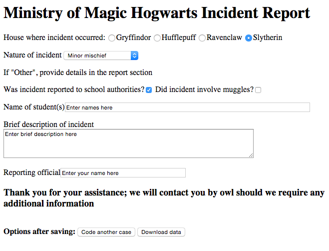

Appendix 1: Sample Template File¶
# CIVET template demonstration file
h1:Ministry of Magic Hogwarts Incident Report
radio: House where incident occurred: [house]
Gryffindor, Hufflepuff, Ravenclaw, *Slytherin
p:
select:Nature of incident [natincid]
*Minor mischief, Unauthorized absence, Accident, Major infraction, Unforgivable Curses, Other
p:If "Other", provide details in the report section
checkbox: Was incident reported to school authorities? [authreport]
No,*Yes
checkbox: Did incident involve muggles? [muggles]
No,Yes
p:
textline: Name of student(s) [names] width=80
Enter names here
p:
textarea:Brief description of incident [descrp] cols = 80
Enter brief description here
p:
textline:Reporting official [reporter] width=40
Enter your name here
h3:Thank you for your assistance; we will contact you by owl should we require more information
save:
_date_, house, natincid, authreport, muggles, names, descrp, reporter
This produces the form
